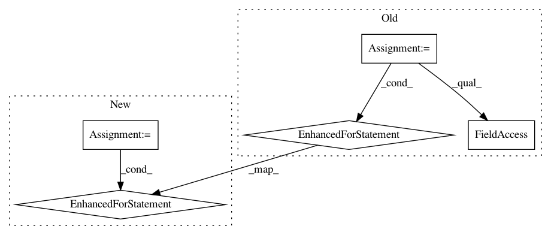

fe2fe5fc5eefe738d44833eba95d8ae246c196db,examples/development/main.py,ExperimentRunner,_restore,#ExperimentRunner#Any#,147
Before Change
get_policy("UniformPolicy", env))
if self._variant["algorithm_params"]["type"] == "SQL":
self.algorithm = get_algorithm_from_variant(
variant=self._variant,
env=self.env,
policy=policy,
Q=Qs[0],
pool=replay_pool,
sampler=sampler,
session=self._session)
else:
self.algorithm = get_algorithm_from_variant(
variant=self._variant,
env=self.env,
policy=policy,
initial_exploration_policy=initial_exploration_policy,
Qs=Qs,
pool=replay_pool,
sampler=sampler,
session=self._session)
self.algorithm.__setstate__(pickleable["algorithm"].__getstate__())
tf_checkpoint = self._get_tf_checkpoint()
status = tf_checkpoint.restore(tf.train.latest_checkpoint(
os.path.split(self._tf_checkpoint_prefix(checkpoint_dir))[0]))
status.assert_consumed().run_restore_ops(self._session)
initialize_tf_variables(self._session, only_uninitialized=True)
// TODO(hartikainen): target Qs should either be checkpointed or pickled.
if self._variant["algorithm_params"]["type"] == "SQL":
self.algorithm._Q_target.set_weights(self.algorithm._Q.get_weights())
else:
for Q, Q_target in zip(self.algorithm._Qs, self.algorithm._Q_targets):
Q_target.set_weights(Q.get_weights())
self._built = True
def main():
After Change
initialize_tf_variables(self._session, only_uninitialized=True)
// TODO(hartikainen): target Qs should either be checkpointed or pickled.
for Q, Q_target in zip(self.algorithm._Qs, self.algorithm._Q_targets):
Q_target.set_weights(Q.get_weights())
self._built = True
def main():
In pattern: SUPERPATTERN
Frequency: 3
Non-data size: 5
Instances
Project Name: rail-berkeley/softlearning
Commit Name: fe2fe5fc5eefe738d44833eba95d8ae246c196db
Time: 2019-02-01
Author: hartikainen@berkeley.edu
File Name: examples/development/main.py
Class Name: ExperimentRunner
Method Name: _restore
Project Name: rail-berkeley/softlearning
Commit Name: 445387698dad8bcdccb53b7708aba564c1a5c319
Time: 2019-02-01
Author: henryzhangbh@outlook.com
File Name: examples/development/main.py
Class Name: ExperimentRunner
Method Name: _restore
Project Name: apple/coremltools
Commit Name: 807f423bac0246c557b216be8c8b63514d031b21
Time: 2017-10-09
Author: cclauss@bluewin.ch
File Name: coremltools/converters/keras/_keras2_converter.py
Class Name:
Method Name: _is_merge_layer